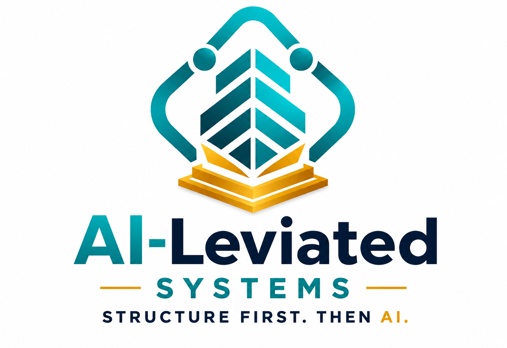

I spent more than two decades in education and public-sector leadership — teacher, principal, chief turnaround officer. I understand what it actually takes to build systems that hold under real organizational pressure.
Request Your Assessment$497 · Professional analysis + 60-minute strategy debrief
I began my professional career in banking in 1994. Customer service, operations, financial services — more than a decade of learning what compliance, accountability, and solving problems under pressure actually look like from the inside.
In 2005, I transitioned into education. What I expected to be a chapter became more than two decades. I served as a teacher, assistant principal, principal, federal grants director, senior compliance and monitoring manager, chief of staff, chief operating officer, and chief turnaround officer.
The work looked different in every role. The problem was consistent. Organizations carrying real capacity, often struggling under fragmented processes, unclear accountability, or change pushed forward without the structure to support it.
"Sustainable improvement does not happen by accident. It requires structure, accountability, clear expectations, and consistent execution."
When AI began reshaping how organizations operate, I recognized immediately that many were ready to move — but had no clear place to start. I became a Certified AI Consultant and founded Ai-Leviated Systems to help organizations bridge the gap between technology, operations, and execution.
Not by chasing the latest tool. By building systems that actually support the work already in front of you.

Ai-Leviated Systems · Education · Government · Private Sector
In the interest of transparency: Individual organizational outcomes vary based on current infrastructure, team capacity, staff readiness, and implementation follow-through. This assessment provides analysis and recommendations — results depend on your organization's action.
Every assessment includes an operational analysis, a full set of strategic deliverables, and a 60-minute debrief where we work through the findings together.
AI Readiness Assessment · Workflow and Process Review · Operational Efficiency Analysis · Compliance and Risk Considerations · Technology and Automation Opportunities. A grounded look at where your organization actually stands — not where you hope it does.
Executive Summary Report · Prioritized Action Plan · AI Implementation Roadmap · Quick Wins Guide · Recommended Tools and Resources. Every document is specific to what was found in your assessment — not a template with your name on it.
A direct working session with Dr. Melendez-Tirado to review findings, answer questions, and establish your next steps. Not a slide presentation. A working conversation.
You are not receiving a templated report from a generalist. You are working directly with a Certified AI Consultant who has led organizational transformation at every level — from classroom teacher to chief turnaround officer. That context shapes every recommendation.
$497 · One-time investment
This is a working analysis of your organization's actual situation — built to give you practical next steps, not more noise.
After you request the assessment, Dr. Melendez-Tirado will reach out within two business days to schedule your initial consultation. This conversation establishes the scope — your organization's programs, workflows, compliance context, and what you most need clarity on.
The assessment work runs from there. A review of your actual operational picture — workflows, AI readiness, efficiency opportunities, compliance and risk considerations, and where technology can realistically help. It is built around what exists, not what a generic framework assumes.
You receive your full package: Executive Summary, Prioritized Action Plan, AI Implementation Roadmap, Quick Wins Guide, and Recommended Tools. Then the 60-minute strategy debrief follows — where findings are walked through, questions are answered, and priorities are set.
Submit your information at the link below. The process begins from there.
Dr. Melendez-Tirado will contact you within two business days to schedule your consultation and begin the assessment work.
Your Executive Summary, Prioritized Action Plan, AI Implementation Roadmap, Quick Wins Guide, and Recommended Tools — followed by the 60-minute strategy session to walk through everything together.
$497 · One-time investment · stan.store/aileviatedsystems
If you have made it this far,
I want to be direct with you. A significant amount of what circulates as AI consulting right now is surface-level — introductory presentations, generic tool recommendations, and frameworks borrowed from startup culture that do not account for how organizations actually function under accountability and compliance requirements.
That is not what this is. The organizations I work with carry real obligations. They need analysis grounded in that reality. I spent more than three decades preparing to do this work — and I do not take lightly the trust that comes with access to your operational picture.
If you are ready to move forward with clarity rather than assumption, I look forward to the work.
Ready when you are,